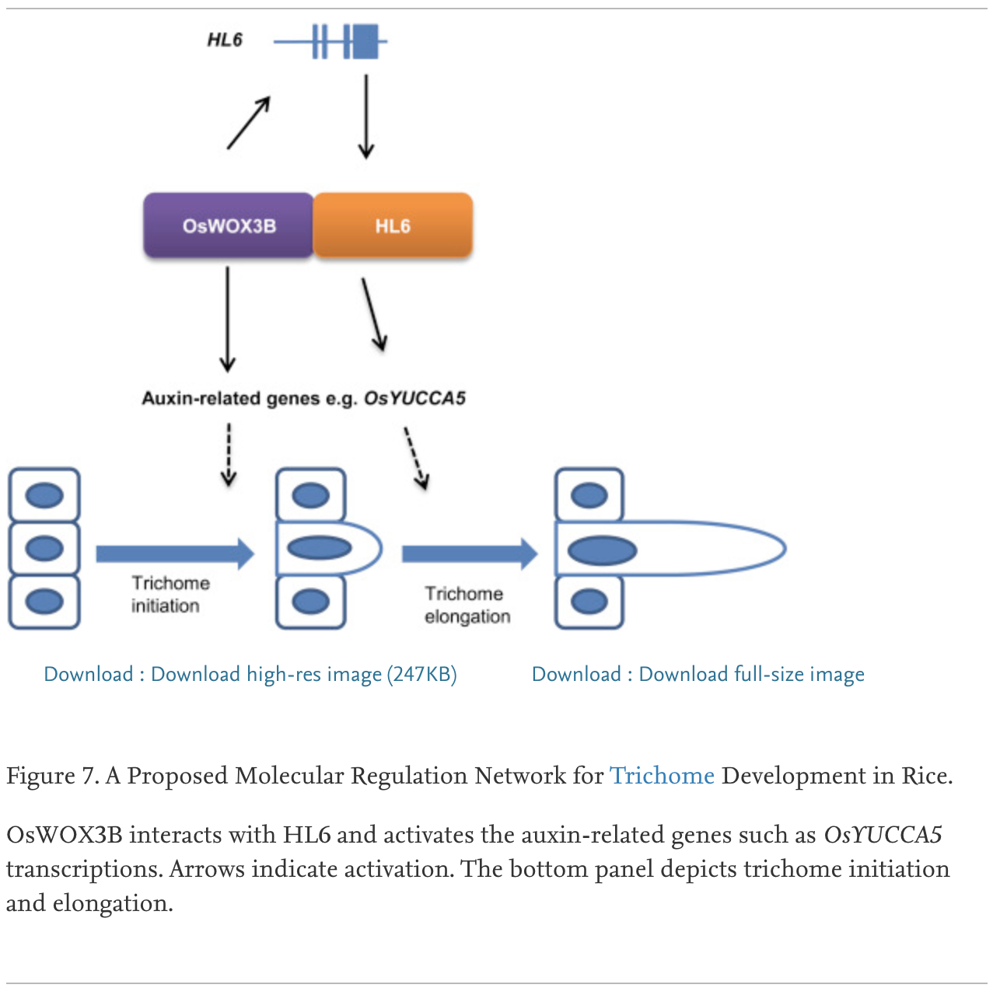

In rice, one gene (OsWOX3B) is known to play a role in trichome initiation and another (Hairy Leaf 6) is involved in trichome elongation. [Sun, et al., 2017]. The paper includes a helpful graphic, reproduced here:
 In another study, the rice gene OsSPL10 was found to promote trichome formation, while also reducing salt tolerance. [Lan, et al. 2019].